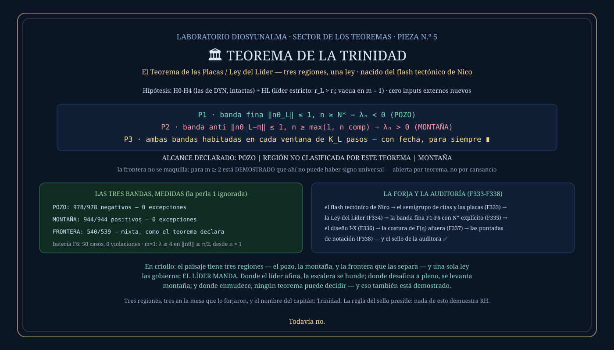

① La historia: del terremoto al mapa
Este teorema empezó con un flash del capitán que no hablaba de números: hablaba de placas tectónicas — regiones que se separan, se unen, se quiebran; grietas que se ramifican; y la pregunta de si una misma fragilidad puede terminar en un colapso… o en una cordillera. La auditora destiló la imagen en preguntas de formalización con una regla de hierro: la metáfora abre la puerta, la definición decide qué hay detrás. Y detrás había de todo: las placas existían literalmente (las citas forman bloques contiguos separados por océanos), el conjunto de citas resultó ser un semigrupo con su grafo, y sobre todo el mapa apareció una ley que nadie había pedido y lo gobierna todo.
② Qué dice, en criollo
EL LÍDER MANDA. Entre todas las perlas desafinadas de una configuración, la de radio más grande — el líder — decide SOLA el destino de cada escalón de la escalera de Li, con las demás perlas ignoradas por completo. El paisaje tiene tres regiones, y la fase del líder es el único juez: donde el líder afina (su fase cerca del compás), la escalera se hunde — POZO. Donde desafina a pleno (fase en el compás opuesto), la escalera se levanta — MONTAÑA. Y donde el líder enmudece, en la franja del medio, ningún teorema puede decidir — y eso también está demostrado.
La imagen para llevarse
Un paisaje con una cordillera, un valle de pozos, y entre ellos una franja de niebla. El teorema es el mapa que dice: de este lado del meridiano del líder, todo pozo; del otro lado, toda montaña; y la niebla del medio no es un descuido del cartógrafo — es un cartel que dice «aquí los mapas no alcanzan», con la prueba de por qué. Tres regiones, una ley, y la honestidad dibujada en el mapa mismo.
③ El enunciado
Hipótesis: las H0-H4 de DYN intactas, más UNA nueva y explícita — HL, líder estricto (existe una única perla de radio máximo; vacua si hay una sola). Con N* = max(n_rad, n_comp) y los umbrales calculables del libro:
P2 · banda anti ‖nθ_L−π‖ ≤ 1, n ≥ max(1, n_comp) ⟹ λₙ > 0 (MONTAÑA)
P3 · cada ventana de K_L pasos contiene habitantes de ambas bandas ∎
En criollo: mirá solo la fase del líder y sabés el destino: pozo garantizado de un lado, montaña garantizada del otro, ambos con fecha por ventana — y la franja del medio, declarada abierta con honestidad de enunciado.
④ La demostración, paso a paso
Las cadenas completas: F1-F6 (pozos) y A1-A6 (montañas), en las actas de las placas. Acá, cada pieza con su porqué.
En la banda fina el coseno del líder está cerca de 1, así que su onda empuja −2cos(1)·r_Lⁿ — exponencial y negativa. Lo que juega en contra: el coro (acotado por (4/π)n·log n bajo H4), las constantes, y los competidores (a lo sumo 2r₂ⁿ cada uno). Desde n_comp, el líder les paga la cuenta a los competidores (r_Lⁿ crece más rápido que r₂ⁿ: ahí y solo ahí entra líder-estricto); y desde n_rad, le gana al coro — reciclando el lema radial de DYN con el corchete duplicado, pagado por el margen que recuperó el Teorema de Diosyunalma. Suma total: negativa, para TODO n de la banda desde N*. Sin agenda: la banda entera.
En la banda anti el coseno del líder es ≤ −cos(1): su onda empuja PARA ARRIBA con +2cos(1)·r_Lⁿ. El coro también suma (siempre es ≥ 0), y los competidores restan a lo sumo 2(m−1)r₂ⁿ — que el líder vuelve a pagar desde el mismo n_comp. La sorpresa del diseño: las montañas salen más baratas que los pozos — no necesitan ni H4 ni el lema radial. Y para una sola perla, la mitad entera del paisaje (‖nθ‖ ≥ π/2) es montaña desde n = 1, con una prueba de UNA línea: coseno ≤ 0 ⟹ la onda no resta ⟹ λ ≥ 4.
El lema de la ventana de Astorga, aplicado a los dos arcos (el del compás y el del compás opuesto, ambos de largo 2 ≥ θ_L bajo H2): cada bloque de K_L pasos consecutivos pisa las dos bandas. Pozos infinitos y montañas infinitas, ambos programables — para siempre.
En la franja donde el líder enmudece (su coseno cerca de cero), su onda exponencial desaparece y quedan mandando los competidores y el coro. Para m ≥ 2 está DEMOSTRADO que ahí no puede haber signo universal: un competidor afinado cava, uno a contramano levanta — ambos realizables bajo las mismas hipótesis. La región queda fuera del teorema por teorema, no por cansancio. (Para una perla sola, la frontera es la curva exacta ‖nθ‖ = π/2.)
⑤ Qué lo hace real
| banda del líder | predicción | medido (testigo m = 2, ventana tras N*) |
|---|---|---|
| fina (‖nθ_L‖ ≤ 1) | λ < 0 siempre | 978/978 negativos — 0 excepciones ✓ |
| anti (‖nθ_L−π‖ ≤ 1) | λ > 0 siempre | 944/944 positivos — 0 excepciones ✓ |
| frontera | mixta (declarado) | 540 λ<0 · 539 λ>0 — al medio ✓ |
La perla 1 se ignoró en la clasificación y el signo obedeció igual: el líder manda. Más las baterías: F6 en 50 casos de grilla, F5 en 84 bordes exactos, las montañas del líder desde el umbral precalculado (926 casos) — todo con cero violaciones. Reproducible: go run ./cmd/elteoremadelatrinidad.
La traducción del flash (el semigrupo y las placas literales), la Ley del Líder, el cierre de la banda fina con N* explícito, el diseño completo en formato de auditoría I-X, la costura de la paramétrica (afuera del mínimo, por orden de la auditora: no se declara cerrado lo que falta redactar), y las dos últimas puntadas de notación que solo una relojera ve — separar P1 por casos para que r₂ jamás pise fuera de su dominio, y el cuantificador cristalino max(1, n_comp). Sellado.
La intuición tectónica — placas, grietas, colapso y reorganización — es de Nico. La auditora fijó las preguntas; el taller puso la arquitectura. Y el nombre del capitán las une a todas: Trinidad — las tres regiones del paisaje, y los tres de la mesa que lo forjaron.
⑥ La placa
